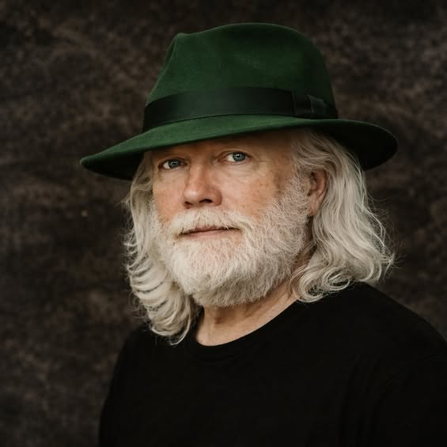

Career Postman · Bassist · Homegrown Storyteller

Russell, c. 2026
Russell spent over thirty years at the united states postal service, building a life through steady, dependable work in a region where reliable employment was hard to come by. Long before retirement gave him the freedom to pursue what he loved, the bass guitar was already waiting.
“The bass kinda just picked me, and I stayed with it because I liked it.”
Some people collect stamps. Russell delivered them — for over three decades, through heat and rain, working at the post office in an area where stable employment was hard to come by. His career with the United States Postal Service wasn't a placeholder or a means to an end. It was a calling, one defined by the steady, reliable presence he brought to his work every single day.
Growing up in a region without a lot of stable work, Russell took the postal service job because it offered what mattered most at the time: security, a decent wage, and the ability to build something for his family. Factory work was the alternative, and the layoffs were abysmal. The post office kept its word to him, and he kept his word right back — showing up every day for thirty-plus years without walking away.
Music found Russell early. At ten years old, an acoustic bass guitar crossed his path and he wrote his very first song — a tune he called “Poor Down.” Instruments came and went in those years: a trumpet that lasted two weeks, a trombone at the instructor’s suggestion. But at sixteen, when friends were forming a band and needed a bass player, he spent his paper-route savings on a bass guitar, taught himself to play it, and never looked back. The bass picked him as much as he picked it, and he has been playing ever since.
Music has been more than a hobby for Russell — it has been a lifeline. Through the harder chapters of his life, it offered peace, comfort, and an outlet for things that couldn’t be expressed any other way. It taught him emotional intelligence and kept him grounded when other things fell apart.
Today Russell is retired, playing bass in Hagatha’s Bluff, and living what he describes simply as “the best job I’ve ever had.” He tinkers with engines for the satisfaction of putting broken things back together, and plays Guild Wars with the same dedication he once brought to his work at the post office. He stays present for his children and grandchildren, knowing that being there — truly there — is the thing he is most proud of.
Russell’s story does not belong to headlines or highlight reels. It belongs to the long game — the decades of small, deliberate choices that add up to a life that is full, purposeful, and genuinely his own. If you follow that bass line, you will find him there at the center of it, doing what he has always done: holding everything together.
Over 30 years as postman. Retired and loving every minute of it.
Self-taught since age 16. Current bassist for Hagatha’s Bluff. Influenced by niche artists and always chasing new music.
an avid gamer at 67 years old.